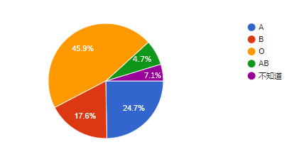

填寫本問卷者的血型比例為，A型24.7%，B型17.6%，O型45.9%，AB型7.1%，而不知道的人則佔4.7%。其中以O型比例佔最多，符合統計O型為世界上佔最多人口的血型。

根據學者的言論與大眾數據相比，可以得知並不是所有理論都符合大眾實情，甚至有些理論不認同的人多過於認同的人由此可知，血型性格學說並不能完全準確分析所有人類的性格。
雖然血型不能夠完全準確的分析一個人的性格，但數據顯示，在某些特定性格的表現上，還是有過半數的人表示認同。血型性格學說並不是百分百準確，但血型性格檢測還是能夠初步了解該血型的人格特質。
性格的形成有很多方面的因素，包括遺傳、家庭、生理因素等。若要以血型性格學說來做作為性格參考的依據，僅適合淺層表面的判斷，而不適合太過於深信或迷信。